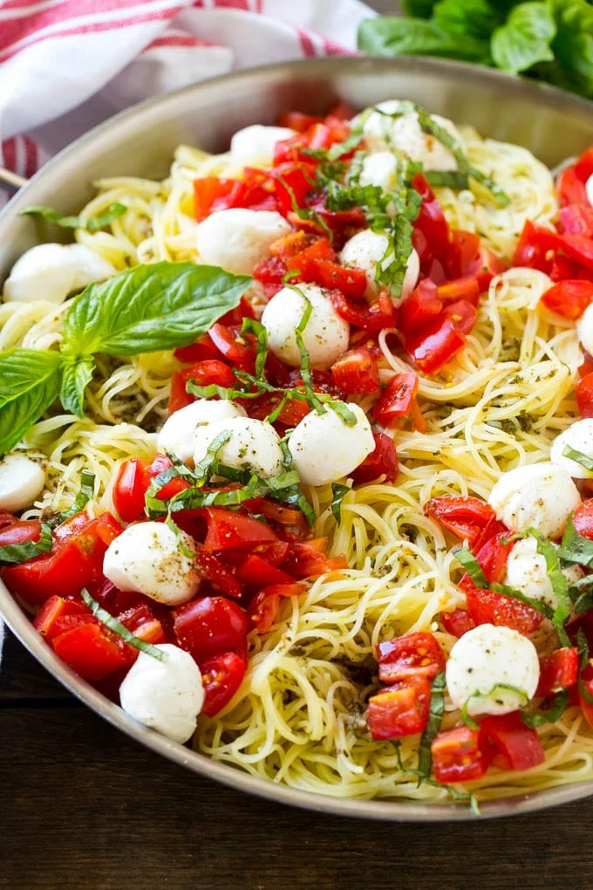

Caprese Pasta with Thai Basil

Description
Caprese pasta with Thai basil is a vibrant fusion of classic Italian flavors and a fresh, aromatic twist. Tender pasta is tossed with juicy cherry tomatoes, creamy mozzarella pearls, and fragrant Thai basil leaves, all coated in a luscious olive oil and balsamic glaze. Each bite bursts with summery brightness.
The sweet tang of tomatoes mingles with the rich mozzarella, while the peppery, citrusy notes of Thai basil add an unexpected yet delightful complexity. Finished with a sprinkle of sea salt and a drizzle of balsamic reduction, this dish is a refreshing and irresistible celebration of simple, bold flavors.
Ingredients
- 1 pound spaghetti
- 1 ½ cups cherry tomatoes, halved
- ½ cup olive oil
- 3 tablespoons lemon-infused white balsamic vinegar
- 2 cloves garlic, chopped
- ⅓ cup chopped Thai basil
- 1 (8 ounce) container small mozzarella balls in oil, halved
- salt and freshly ground black pepper to taste
Steps
- Bring a large pot of lightly salted water to a boil. Cook spaghetti in the boiling water, stirring occasionally, until tender yet firm to the bite, about 12 minutes.
- Combine cherry tomatoes, mozzarella balls, olive oil, balsamic vinegar, garlic, and Thai basil in a large mixing bowl; mix well. Season with salt and pepper to taste.
- Drain pasta and top with cherry tomato mixture.
È pronto!
Home